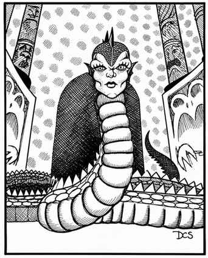

纳迦 · Naga
 |
|
纳迦是拥有优秀头脑与魔法能力的蛇形生物，通常出现在温暖气候。
守护纳迦 Guardian Naga。守护纳迦聪慧善良，主要出现在圣地，守护守序善良信徒的财宝，或监视某种邪恶。除造成 1–6 点伤害的毒咬与造成 2–8 点伤害的缠绕外，它还能在最多 3 寸距离向单个生物喷吐毒液；若目标毒素豁免失败，毒液会将其杀死。守护纳迦还能像 6 级牧师一样施展牧师法术：每天 2 个一环、2 个二环、1 个三环和 1 个四环法术。它们披覆金绿色鳞片，背部有银色三角纹，双眼呈金色。
灵魂纳迦 Spirit Naga。灵魂纳迦彻底邪恶，随时随地都企图伤害他人，偏好废墟、阴沉处所或地下环境。除造成 1–3 点伤害的毒咬外，任何与其目光相遇的类人生物若未通过麻痹豁免，都会被永久魅惑（如同魅惑术）。灵魂纳迦还能以 5 级魔法师和 4 级牧师的能力施法：每天 4 个一环、2 个二环、1 个三环魔法师法术，以及 2 个一环、1 个二环牧师法术。它们身披黑鳞，带有深红色环带；头部肿大而酷似人类，甚至有相同的肤色与头发。
水纳迦 Water Naga。水纳迦只生活在清澈的淡水中，性情好奇但十分中立，除非受到威胁或先遭攻击，否则很少主动攻击。它们通常栖息在池塘、湖泊或河流表面数十尺以下，因此巢穴很少受到打扰。除造成 1–4 点伤害的毒咬外，水纳迦还能以 5 级魔法师的能力施展魔法（不包括火焰类法术）：每天 4 个一环、2 个二环和 2 个三环魔法师法术。水纳迦鳞片从翡翠绿到绿松石色，呈网状纹理，夹有巧克力棕与浅玉绿或深灰与橄榄色；双眼从浅绿到明亮琥珀色不等。